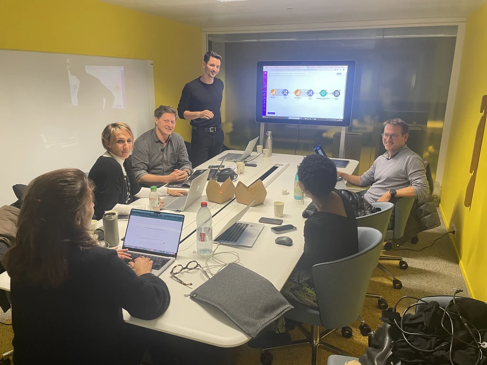
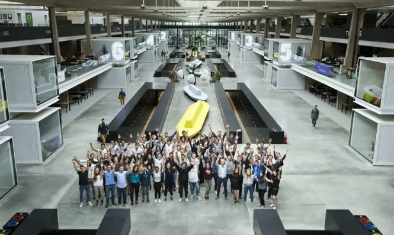
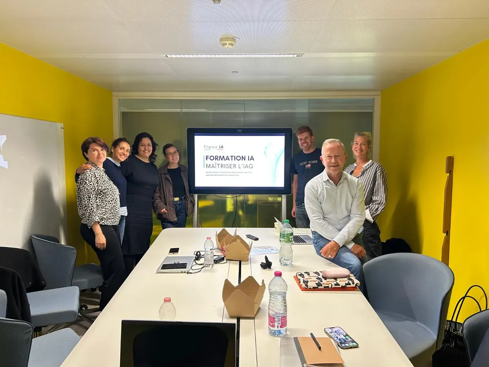
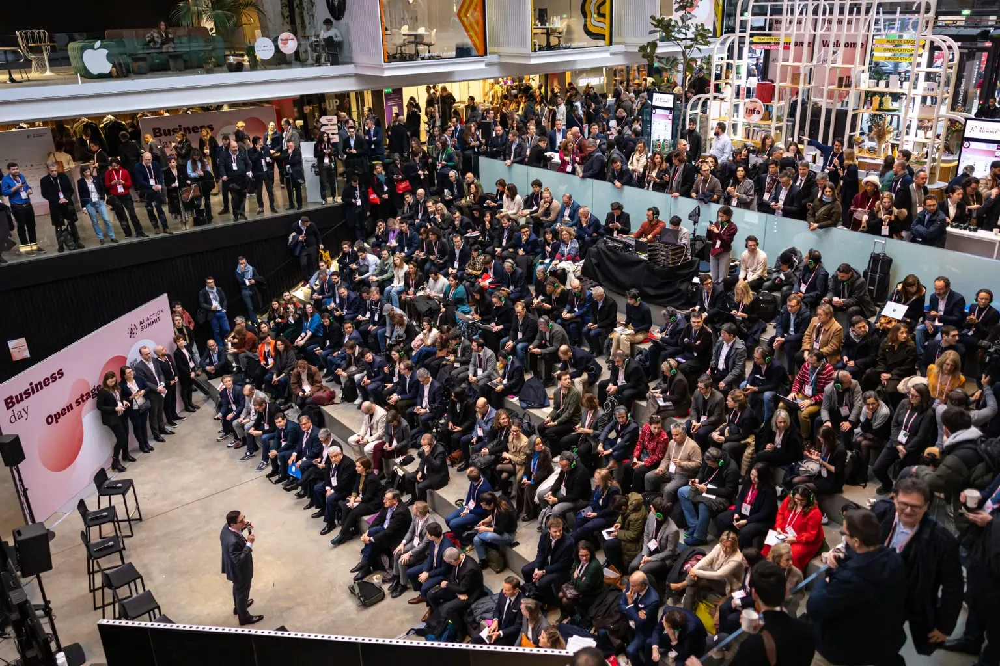
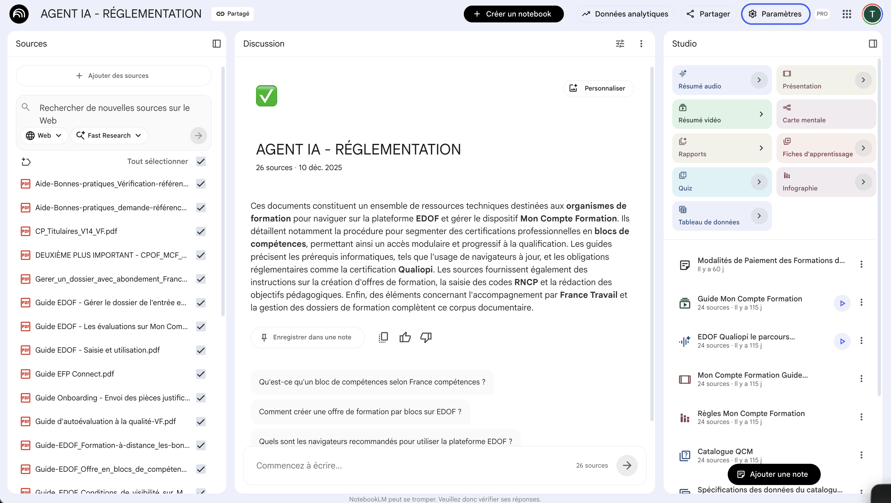
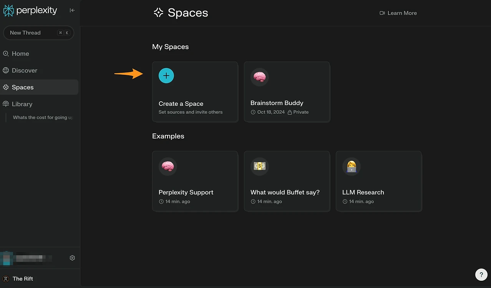
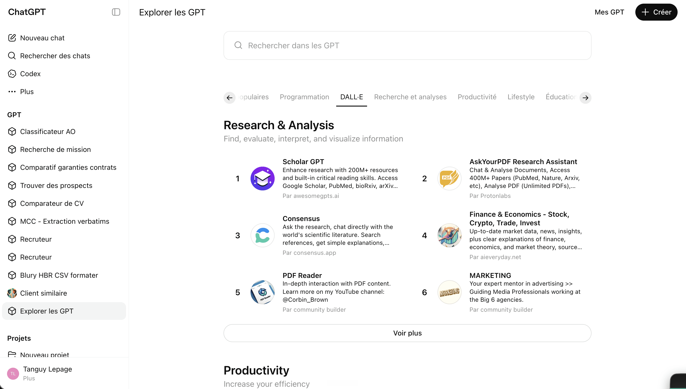
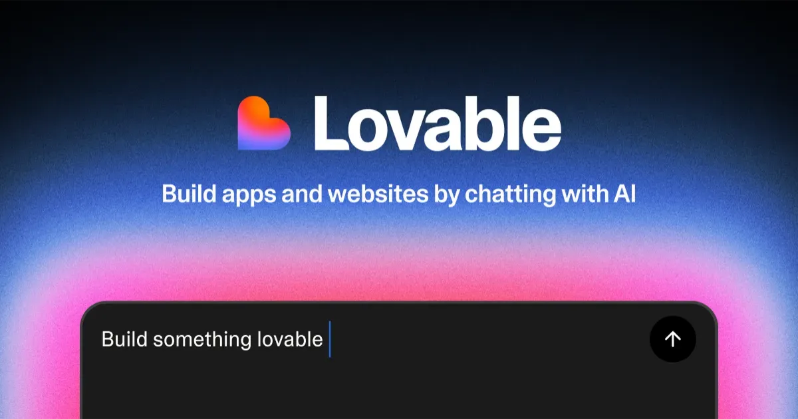
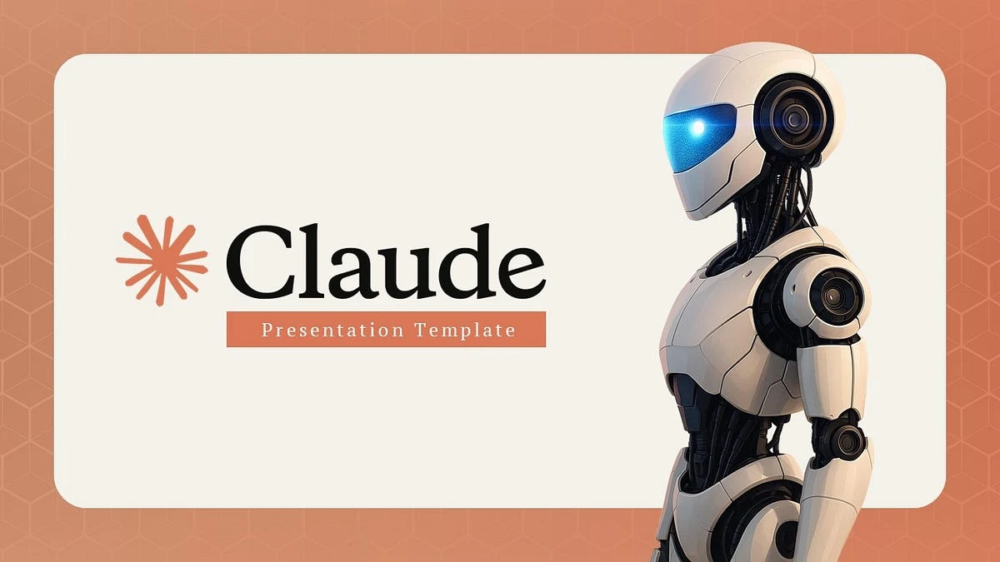
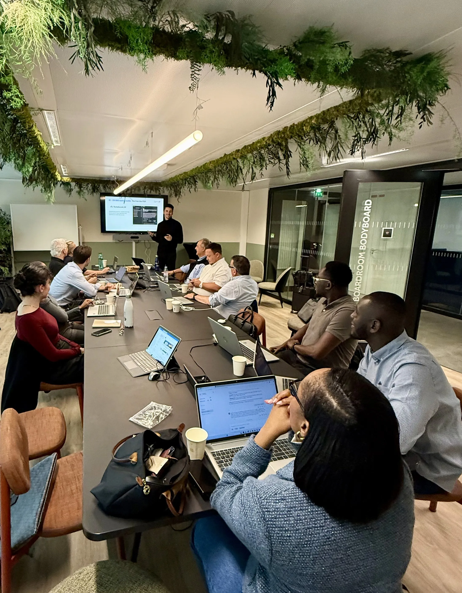

Exploitez enfin 100% des outils d'IA. Deux jours de formation pratique, interactive et sur-mesure pour ne plus être dépassé et libérer 10 heures par semaine*.
C'est en forgeant qu'on devient forgeron. Pas en regardant 21h de vidéos.
Les meilleurs cas d'usage des meilleurs outils d'IA, pendant deux jours d'ateliers
Près de chez vous, pour une formation humaine et efficace
9 participants maximum, pour des échanges concrets

Pour maximiser l'impact du présentiel, nous mettons à votre disposition des vidéos pour paramétrer vos comptes et vos cas d'usage. Vous arrivez ainsi prêt à produire.
Vous comprendrez comment l'IA change nos métiers, ce qu'on peut en attendre, quelles sont ses limites et défauts, et comment intégrer cette technologie dans votre quotidien.
Apprenez à structurer vos demandes pour obtenir des résultats fiables et complets dès le premier essai, et maîtrisez les techniques de prompting qui font la différence.
Vous saurez quels sont les meilleurs outils d'IA à utiliser, quelles tâches vous pouvez leur déléguer dès maintenant, et comment.
Lors d'ateliers couvrant les deux journées, vous utiliserez des outils d'IA variés, dont les agents, pour gagner du temps dans votre quotidien professionnel.
Ancrez l'IA dans vos habitudes et restez au courant des nouveautés les plus pertinentes grâce à notre veille IA. Nous restons également disponible via WhatsApp et email pour répondre à vos questions.
Pas de théorie inutile, pas de cas fictifs : vous travaillez directement sur vos besoins. Vous constituez dès le premier jour de la formation votre propre équipe de collaborateurs IA grâce à notre méthode unique.

Exemple : créer un PowerPoint en quelques minutes. Nous vous montrons les meilleurs outils, prompts et astuces adaptés à votre métier.

Exemple : préparer une présentation urgente pour votre entreprise. Vous mettez en pratique directement sur vos documents, vos emails, vos process.

Nos experts IA améliorent vos essais et vous donnent le prompt ou agent idéal pour reproduire vos résultats à l'avenir. Chaque session vous laisse avec des solutions prêtes à l'emploi.
Simplifiez des dizaines de vos tâches et gagnez plusieurs heures par jour en créant des assistants IA.
Le programmeComprenez et maîtrisez les outils d'IA essentiels pour devenir indispensable.
Le programmeMaîtrisez l'une des compétences les plus recherchées de 2025.
Le programme5 outils opérationnels, configurés et testés pendant les 15 heures de formation.
Un second cerveau - Notebook LLM
Organisez vos ressources et retrouvez n'importe quelle info en quelques secondes.

Une veille automatisée - Perplexity AI
Restez à la pointe de votre secteur sans y passer des heures.

Un assistant IA personnel - ChatGPT
Un assistant calibré sur votre métier et vos habitudes de travail.

Votre propre application / Site web - Lovable
Créez une app ou un site fonctionnel, sans coder une seule ligne.

Un assistant de création de présentations - Claude
Ne perdez plus jamais de temps à créer des slides.

Nos formateurs sont tous des experts en IA et pédagogie, ayant chacun accompagnés des centaines d'apprenants.
Tanguy Lepage
+8000 followersFondateur France IA, 1 400 professionnels formés à l'IA
Morgan Surjus
+600 formésFondateur MenuVerse, Ingénieur & Entrepreneur
Edouard Willemsen
+9000 followersConsultant et conférencier sur l'adoption de l'IA par les entreprises
Djouzar Abassebay
+27 000 followersCEO La Machine Pensante, formateur suivi par 27 000 personnes
Pierre Penhard
+2000 formésCo-founder TheFoundry, Teacher & Batch Manager Le Wagon
Gregory Jeandot
+1000 formésCEO Tous les Jeudis, cabinet de transition digitale et IA
Michaël Amar
+400 formésExpert en automatisation & conception d'agents IA
Antoine Bousquet
+1000 formésDirecteur conseil digital chez SPINTANK

Un rendez-vous individuel pour comprendre vos besoins
Plusieurs heures de vidéos en amont pour préparer et maximiser l'impact de la formation
2 jours de formation en petit groupe dans le plus grand incubateur de startups au monde
Toutes les astuces nécessaires pour utiliser 100% de la puissance des outils d'IA
L'accès à des prompts et agents IA à copier coller pour gagner du temps chaque jour
Un expert IA disponible pour répondre à vos questions
1 650 €
À toute personne souhaitant maîtriser rapidement ChatGPT et les outils d'IA afin de gagner du temps, augmenter sa productivité et booster sa carrière.
Oui. Une grande partie de nos apprenants sont entrepreneurs, indépendants ou freelances.
Après le visionnage optionnel mais recommandé des vidéos pour comprendre et préparer vos comptes sur les outils IA, chaque module des journées en présentiel alterne démonstration d'un cas d'usage ou outil et mise en pratique sur une tâche de votre quotidien.
Notre formation permet d'automatiser entre 30% et 90% de certaines tâches, ainsi que de comprendre et maîtriser les meilleurs outils d'IA.
Vous améliorez votre efficacité dès le début de la formation, grâce aux cas d'usage concrets sur lesquels vous pratiquez immédiatement.
Oui. En complément des supports de formation, vous recevez des tutoriels vidéo et des exemples prêts à l'emploi pour continuer à progresser en toute autonomie.
Oui. Nous restons disponible par WhatsApp et par email pour répondre à vos questions et vous aider à implémenter concrètement l'IA dans votre activité.
Oui. Cette formation prépare à la certification RS6891 : « Produire et réviser du contenu professionnel multimédia en utilisant les outils d'Intelligence Artificielle Générative (IAG) de façon responsable ».
Chez FRANCE IA, nous croyons fermement que la formation doit être accessible à tous. Si vous êtes en situation de handicap et que vous avez besoin d'aménagements particuliers, n'hésitez pas à nous contacter. Ensemble, nous trouverons la meilleure solution pour vous permettre de suivre nos formations dans les meilleures conditions. Contactez-nous à : contact@franceia.com
1. Un échange avec une personne de l'équipe de France IA (prenez rendez-vous). 2. Un questionnaire qui permet d'évaluer le positionnement de l'apprenant, son besoin, et son respect des pré-requis, ainsi que les demandes d'adaptation éventuelles (site d'inscription de France IA) 3. Une validation de l'entrée si les pré-requis et le besoin de l'apprenant correspondent à la formation proposée par France IA 4. Un questionnaire pour exprimer les attentes concernant la formation, à l'entrée de la formation, qui permettra au formateur d'adapter sa posture, son discours et ses exemples aux apprenants présents lors de la formation.
De nombreuses études concluent à entre 10% et 40% de gains de productivité, dépendamment du métier que vous exercez. Nous vous invitons à consulter l'étude menée par Harvard et BCG Group, "Navigating the Jagged Technological Frontier" : consulter l'étude.